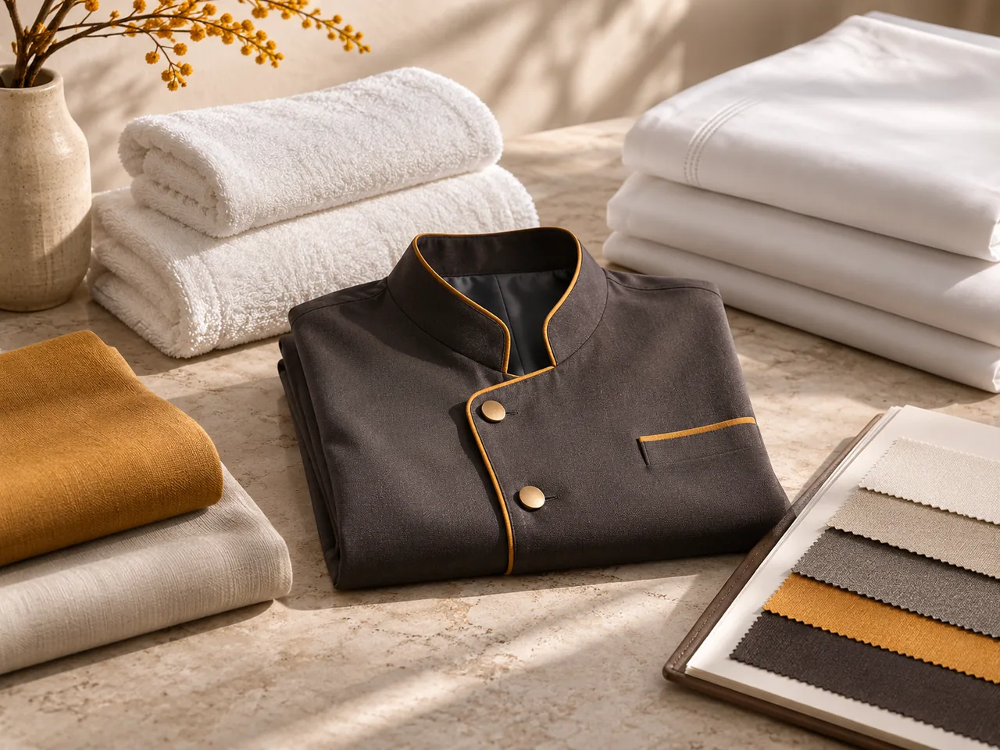

Clarify discovery
Make product and business routes understandable.
Collaborative interface design for a uniforms and linens business network.

Kamblis connects businesses in the uniforms and linens industry. Marketplace interfaces need to make products, members, and next steps understandable across different user goals.
A B2B network contains both product and member information. The design task was to organize discovery so visitors could understand what is offered and who provides it. This is an inferred interface challenge, not a published research finding.
Make product and business routes understandable.
Place useful product and member details where visitors expect them.
Maintain consistent layouts and patterns across collaborative work.
Use category-led navigation and structured information to connect a listing to a more detailed decision. Responsive patterns keep the relationship between members and products coherent.
Assess relevant categories, products and potential connections.
Present business and product information clearly.
A simplified design map of the public or proposed experience, not a recorded user test.
An understated marketplace presentation keeps products and business details in focus. The textile still life is an editorial cover; the genuine public screenshot documents the live site.

These are design intentions. No measured outcome is implied.
Treat products and members as related paths
Both the offer and provider matter in B2B evaluation
Clearer context for a potential connection
Establish a scannable hierarchy
Visitors compare multiple options
More informed exploration
Align repeated interface patterns
Individual and joint work must read as one product
A more consistent experience
I worked with a fellow designer, contributing both individual and shared design work. The public image represents the product; it does not imply I alone designed every visible screen.
The public screenshot gives context for the platform. It does not assign every visible feature to my individual contribution, and no measured discovery improvement is claimed.
Approved screen-level examples would let me identify individual contributions and show more of the design process.